0
1
2
3
4
5
6
7
8
9
10
Base
Leg
Base
Leg
{{tg.t}}
Done
A
B
C
D
A
B
C
D
120°
?
60°
120°
+
?
=
180°
60°
A
B
C
D
6 cm
10 cm
5 cm
?
{{o.t}}
{{sl.t}}
{{lb.t}}
120°
60°
180°
Lesson complete!
{{scoreText}}
Play again
{{cp.t}}
{{cp.r}}
{{wd.t}}
{{nextLabel}}
{{screensLabel}}
{{th.n}}
Back
Next
